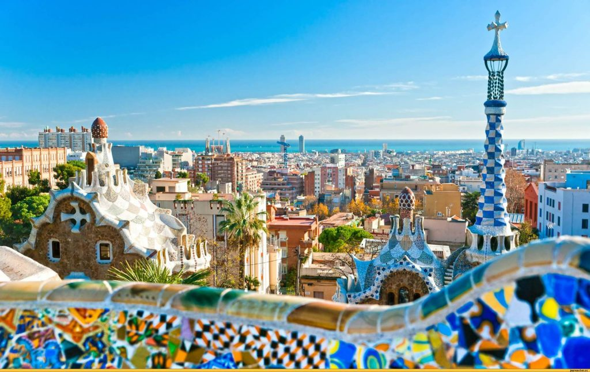

Дата народження: 15.12.2005, Місто: Запоріжжя
Освіта:
Запорізька гімназія №6;
НТУУ "КПІ", м. Київ
Барселона — це місто, яке поєднує історію та сучасність. Воно відоме своєю архітектурою Антоніо Ґауді, зокрема храмом Саграда Фамілія та парком Ґуель. Тут відчувається особлива атмосфера середземноморського узбережжя, а прогулянка по вулиці Ла Рамбла чи відпочинок на пляжі роблять це місто неповторним. Саме тому Барселона залишила у мене найяскравіші враження.
